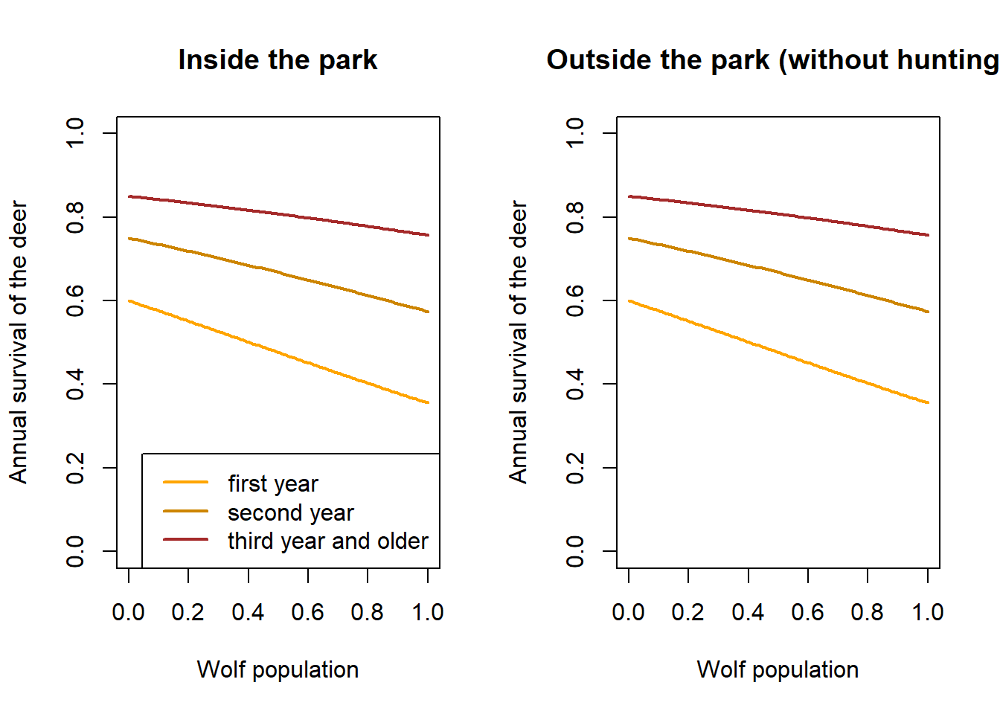

5 Functions for the demographic parameters
5.1 Wolf
5.1.1 Survival
We assume that wolf survival is higher the higher the ungulate populations
FUNwolfS1 <- function(x, sdInt=0.2, sdslope=0.2, corpars=0.8){
# x = normalised ungulate density (0 = minimal, 1 = maximal)
# corpars = correlation between intercept and slope
Sigma <- matrix(c(sdInt^2, sdInt*sdslope*corpars, sdInt*sdslope*corpars, sdslope^2), nrow=2)
pars <- mvrnorm(n = 1, mu = c(-0.9,0.6), Sigma = Sigma)
plogis(pars[1] + pars[2]*x)
}
FUNwolfS2 <- function(x, sdInt=0.2, sdslope=0.2, corpars=0.8){
Sigma <- matrix(c(sdInt^2, sdInt*sdslope*corpars, sdInt*sdslope*corpars, sdslope^2), nrow=2)
pars <- mvrnorm(n = 1, mu = c(0,0.6), Sigma = Sigma)
plogis(pars[1] + pars[2]*x)
}
FUNwolfS3plus <- function(x, sdInt=0.2, sdslope=0.2, corpars=0.8){
Sigma <- matrix(c(sdInt^2, sdInt*sdslope*corpars, sdInt*sdslope*corpars, sdslope^2), nrow=2)
pars <- mvrnorm(n = 1, mu = c(0.6,0.6), Sigma = Sigma)
plogis(pars[1] + pars[2]*x)
}
x <- seq(0, 1, length=100) # 0 = no ungulates, 1 =maximum number of ungulates
y1 <- matrix(NA, ncol=nsim, nrow=length(x))
y2 <- matrix(NA, ncol=nsim, nrow=length(x))
y3 <- matrix(NA, ncol=nsim, nrow=length(x))
for(i in 1:nsim){
y1[,i] <- FUNwolfS1(x)
y2[,i] <- FUNwolfS2(x)
y3[,i] <- FUNwolfS3plus(x)
}
y1mean <- apply(y1, 1, mean)
y1lwr <- apply(y1, 1, quantile, probs=0.025)
y1upr <- apply(y1, 1, quantile, probs=0.975)
y2mean <- apply(y2, 1, mean)
y2lwr <- apply(y2, 1, quantile, probs=0.025)
y2upr <- apply(y2, 1, quantile, probs=0.975)
y3mean <- apply(y3, 1, mean)
y3lwr <- apply(y3, 1, quantile, probs=0.025)
y3upr <- apply(y3, 1, quantile, probs=0.975)
plot(x, y1[,1], type="n", lwd=2, col="orange", xlab="Ungulate population", ylab="Annual survival of the Wolf", ylim=c(0,1), xaxt="n")
axis(1, at=c(0,1), labels=c("Minimum", "Maximum"))
polygon(c(x, rev(x)), c(y1lwr, rev(y1upr)), border=NA, col=alpha("orange", 0.5))
lines(x, y1mean, col="orange", lwd=2)
polygon(c(x, rev(x)), c(y2lwr, rev(y2upr)), border=NA, col=alpha("orange3", 0.5))
lines(x, y2mean, col="orange3", lwd=2)
polygon(c(x, rev(x)), c(y3lwr, rev(y3upr)), border=NA, col=alpha("brown", 0.5))
lines(x, y3mean, col="brown", lwd=2)
legend("bottomright", lwd=2, col=c("orange", "orange3", "brown"), legend=c("first year", "second year", "third year and older"))

5.2 Red deer
5.2.1 Deer movements
A proportion of deer moves into the park during hunting and also depending on the grass biomass above the treeline, a proportion of deer moves above the treeline where the deer can interact with Chamois.
We assign a deer to belong to inside or outside the park according to where it is during reproduction. The location of deer can change seasonally during hunting.
Hunting starts in September (whole months), if quota not fulfilled, there is another hunt in October for around 10 days. During the hunting period, a certain proportion of deer from outside the park move temporary into the park where they are protected.
# proportion of deer that are above the treeline during summer
# the number of deeer above the treeline is competing with chamois
FUNdeerpropSuhigh <- function(ndvi){
# standardised ndvi (mean 0, sd 1)
return(plogis(0.3*ndvi))
}
FUNdeerpropHuIn <- function(){
# we assume that 20% of the outside population move into the park during hunting
return(0.2)
}
x <- seq(-3,3)
plot(x, FUNdeerpropSuhigh(x), type="l", lwd=2, col="darkgreen", ylim=c(0,1),
xlab="NDVI of alpine meadows (z-transformed)", las=1, ylab="Proportion of deer above the treeline during spring/summer")
5.2.2 Red deer survival
Males live up to 17 years, females up to 20 years (Wildtierbiologie SGW 2021).
todo: separate population models for males and females
# expected population growth rate; trying out demographic parameters that produce plausible growth
S1 <- 0.6
S2 <- 0.75
S3plus <- 0.85
f <- 1.1
deerLeslie <- matrix(c(0,f/2*S1,f/2*S1,f/2*S1,
S1, 0,0,0,
0,S2,0,0,
0,0,S3plus,S3plus), ncol=4, nrow=4, byrow=TRUE)
max(Re(eigen(deerLeslie)$values))## [1] 1.024414We assume that deer survival is lower the higher the wolf population and juveniles are more strongly affected by the wolf compared to adults. Further, the effect of the wolf is larger the larger the proportion of deer in the diet of the wolf.
# x = wolf population (normalised, 0-1),
# propindiet = proportion of deer in wolf diet
FUNdeerInS1 <- function(x, propindiet=1) plogis(qlogis(0.6)-1*x*propindiet)
FUNdeerInS2 <- function(x, propindiet=1) plogis(qlogis(0.75)-0.8*x*propindiet)
FUNdeerInS3plus <- function(x, propindiet=1) plogis(qlogis(0.85)-0.6*x*propindiet)
FUNdeerOutS1 <- function(x, propindiet=1) plogis(qlogis(0.6)-1*x*propindiet)
FUNdeerOutS2 <- function(x, propindiet=1) plogis(qlogis(0.75)-0.8*x*propindiet)
FUNdeerOutS3plus <- function(x, propindiet=1) plogis(qlogis(0.85)-0.6*x*propindiet)
x <- seq(0, 1, length=100) # 0 = no ungulates, 1 =maximum number of ungulates
y1 <- FUNdeerInS1(x)
y2 <- FUNdeerInS2(x) # first year survival
y3 <- FUNdeerInS3plus(x)
par(mfrow=c(1,2))
plot(x, y1, type="l", lwd=2, col="orange", xlab="Wolf population", ylab="Annual survival of the deer",
ylim=c(0,1), main="Inside the park")
lines(x, y2, lwd=2, col="orange3")
lines(x, y3, lwd=2, col="brown")
legend("bottomright", lwd=2, col=c("orange", "orange3", "brown"), legend=c("first year", "second year", "third year and older"))
y1 <- FUNdeerOutS1(x)
y2 <- FUNdeerOutS2(x) # first year survival
y3 <- FUNdeerOutS3plus(x)
plot(x, y1, type="l", lwd=2, col="orange", xlab="Wolf population", ylab="Annual survival of the deer",
ylim=c(0,1), main="Outside the park (without hunting)")
lines(x, y2, lwd=2, col="orange3")
lines(x, y3, lwd=2, col="brown")
5.3 Chamois
5.3.1 Chamois survival
lifespan is upt to 21 or 22 years for males and females respectively (Wildtierbiologie SGW 2021).
survival of chamois depends on NDVI and red deer population. Survival may be low when deer population is high and NDVI is high, survival may be high when NDVI is high and deer population is low. When NDVI is low, chamois survival may not be affected. Maybe winter survival of chamois depends on summer condition.
# expected population growth rate; trying out demographic parameters that produce plausible growth
S1 <- 0.6
S2 <- 0.8
S3plus <- 0.9
f <- 0.9
deerLeslie <- matrix(c(0,f/2*S1,f/2*S1,f/2*S1,
S1, 0,0,0,
0,S2,0,0,
0,0,S3plus,S3plus), ncol=4, nrow=4, byrow=TRUE)
max(Re(eigen(deerLeslie)$values))## [1] 1.040706# x = wolf population (normalised, 0-1),
# propindiet = proportion of chamois in wolf diet
FUNchamoisS1 <- function(x, propindiet=1) plogis(qlogis(S1)-1*x*propindiet)
FUNchamoisS2 <- function(x, propindiet=1) plogis(qlogis(S2)-0.8*x*propindiet)
FUNchamoisS3plus <- function(x, propindiet=1) plogis(qlogis(S3plus)-0.6*x*propindiet)
x <- seq(0, 1, length=100) # 0 = no ungulates, 1 =maximum number of ungulates
y1 <- FUNchamoisS1(x)
y2 <- FUNchamoisS2(x) # first year survival
y3 <- FUNchamoisS3plus(x)
plot(x, y1, type="l", lwd=2, col="orange", xlab="Wolf population", ylab="Annual survival of the chamois",
ylim=c(0,1))
lines(x, y2, lwd=2, col="orange3")
lines(x, y3, lwd=2, col="brown")
legend("bottomright", lwd=2, col=c("orange", "orange3", "brown"), legend=c("first year", "second year", "third year and older"))